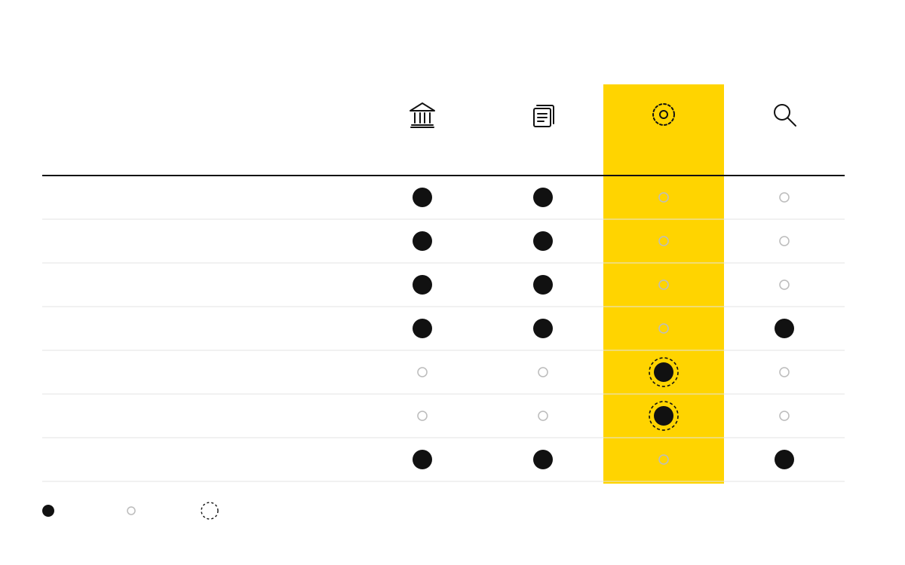

Execute transactions Hold state Validate Decide what it means Put in order Keep available Verify System A System B Ordering service Reader CONTENT-BLIND Who does what The service does two things. Everything else stays put. does it never proposed, under research V02 · WHO DOES WHAT · swiss-grid · responsibility-matrix · one-highlight-column